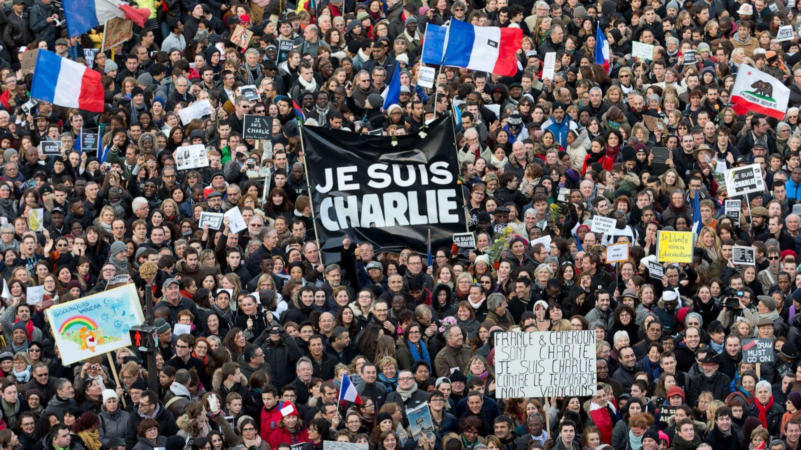
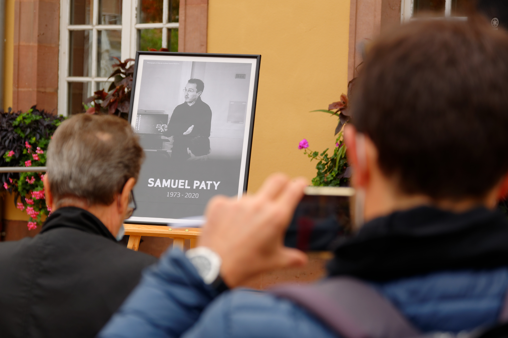

France's Fight Against Terrorism To Start In The Classroom
French Prime Minister Jean Castex and Education Minister Jean-Michel Blanquer attend a memorial service for slain teacher Samuel Paty at a school in Conflans-Sainte-Honorine, near Paris, Nov. 2, 2020(Photo by Thomas Coex | AP)
French Teachers Tasked With Fighting Radicalization Face an Impossible Job
By Karina Piser
The French government is using education as a tactic to fight terrorism and radicalisation.
When Rachid Zerrouki, a teacher in Marseille, headed back to his classroom last Monday, he braced himself for the worst. He hadn’t seen his students since the brutal killing of Samuel Paty, a 47-year-old middle school teacher in the Paris suburb of Conflans-Sainte-Honorine, who was beheaded by a young Chechen refugee days after he showed his class cartoons of the Prophet Muhammad during a lesson about freedom of expression.
With school back in session after a holiday break, the Education Ministry had instructed teachers to have students participate in a minute of silence to express solidarity with Paty and all teachers throughout France.
Zerrouki, who teaches middle school students facing academic difficulty, had warily watched the country react to Paty’s murder. There was unity, at first, with thousands gathering nationwide in rallies to honor Paty and defend freedom of expression.
But soon after, his killing was swept up in a debate that has become standard fare after terrorist attacks in France: a national reckoning over Islam and its place in a society that holds fast to laicite, France’s particular vision of secularism, and other “republican values.”
Because Paty was murdered for what he had taught his students, much of the attention has centered on schools. In a speech following the beheading, President Emmanuel Macron promised that “in every middle school, in every high school, we’ll give teachers back the power to ‘make republicans,’ [and] restore their rightful position and authority.”
One of the satirical cartoons of the Prophet Muhammad that Samuel Paty showed his class. (Source: Charlie Hebdo)
This sounded familiar to Zerrouki. The education system was also thrust to the forefront of this debate in January 2015, after two gunmen affiliated with al-Qaida killed 12 people at the Paris offices of Charlie Hebdo, a satirical magazine that has long published caricatures of religious figures, including the Muslim prophet.
When schools nationwide paused for a moment of silence the day after the Charlie Hebdo attack, some students refused to participate, or openly sympathized with the attackers. Some repeated a conspiracy theory that the attacks had been staged to demonize Muslims, or argued that the cartoonists “had it coming,” because they should have known not to caricature the prophet.
Others subverted the national refrain of “Je suis Charlie,” or “I am Charlie,” which had echoed internationally as an expression of support for the magazine’s staff, and said instead, “No, we are not Charlie.”
Parisians show support for the victims of the Charlie Hebdo attack at a rally to fight terrorism. (Source: World Today News)
There were reportedly more than 200 such disruptions in schools to the moment of silence that day, which many in France and in government saw as evidence that the education system had failed to promote republican values and accordingly, failed to integrate Muslims into French society. In response, the government launched measures to double down on the teaching of these values—both to improve social cohesion, and as a tool in the fight against radicalization.
Zerrouki’s students in particular have tended to be the targets of these efforts. Many are of immigrant origin, come from Muslim families, and live in low-income areas and banlieues, the suburbs of major cities where many immigrants live.
“Everyone in society is waiting for them to mess up or refuse to participate in the moment of silence,” he said. “There’s this stigmatization. Everything in the media is put in place to give this image of our students as disrespectful of laicite.”
Since Paty’s murder, government officials have repeatedly blurred the line between the need for policies to counter radical Islamism, and rhetoric that targets French Muslims in general. The climate, teachers say, is hardly conducive to pedagogy and often clashes with the notions of free expression leaders so ardently defend.
“It’s the same climate as after Charlie Hebdo, but more intense,” Zerrouki told me. “The government’s tone, the pressure on us, is firmer, and more authoritarian. It feels like we’re sidelined, and so are our students, when it comes to teaching about free speech and laicite. There’s less room for pedagogy. It’s like they don’t trust us.”
Zerrouki and other teachers I’ve interviewed—both in the past several weeks and in the years that followed the Charlie Hebdo attacks—felt they have been handed an impossible task: to educate students about values that are fundamental but increasingly politicized, and have been entangled in contentious conversations about national identity and the fight against terrorism.
Paty’s killing came amid the ongoing trial of 14 accomplices in the January 2015 attacks in Paris, including a shooting that killed four at a kosher supermarket two days after the assault on Charlie Hebdo. Even as the trial reignited debates on the right to mock religion⎯or as Macron recently put it, the “right to blasphemy”⎯in late September, a man stabbed a passersby near the magazine’s now former office, seriously wounding two people. Then, two weeks after Paty’s murder, a terrorist killed three people in a knife attack in the southern city of Nice, marking the latest episode in what has become a tragic reality of routine Islamist violence in France.
Laicite should be something that frames the relationship between the state and religions, that mandates the state’s neutrality. It shouldn’t impose anything.
Valentine Zuber, Historian of Religion and Laicite at the Ecole Pratique des Hautes Etudes in Paris
Leaders have consistently struggled to divorce pressing security concerns from anxiety over Islam in general, in part because many see questions of identity as fundamental to social cohesion, and social cohesion as central to preventing radicalization. In a much-anticipated speech in early October on “Islamist separatism,” Macron unveiled plans to fight radical Islam by changing the way the entire religion is regulated and organized in France, including by monitoring Muslim civil associations and schools, and creating a certification process for imams.
Although the president focused primarily on Islamist extremism, certain comments—notably that Islam is “in crisis all over the world”—angered some French Muslims, who have for years felt targeted by counter-radicalization efforts.
At the same time, the trauma of continuous terrorist violence, which has killed 260 French citizens since 2012, has hardened mainstream interpretations of laicite. The concept is increasingly defended as a way to keep religion out of public life—and, for some, as a way to single out observant Muslims. In 2006, then-President Jacques Chirac criticized Charlie Hebdo, arguing that “tolerance and the respect of all faiths” were also republican values.
Today, such a gesture from a French head of state would be unthinkable, particularly for a political establishment ever-cognizant that appearing soft on terrorism could boost support for the far right.
“Laicite should be something that frames the relationship between the state and religions, that mandates the state’s neutrality. It shouldn’t impose anything,” said Valentine Zuber, a historian of religion and laicite at the Ecole Pratique des Hautes Etudes in Paris. By definition, the term is “precisely the possibility to have different religions in the public space,” she said, but “instead, we’ve turned laicite itself into a religion, a dogma, and those who don’t subscribe are signaled or considered against republican values.”
The Education Ministry, Zuber added, has embraced this interpretation, creating a potential conflict for teachers. “The ideological, political tone of the demands placed on the education system do not correspond to the mission of public schools, which is to foster responsible citizens who are capable of making their own political choices that reflect their own experiences.”
Europe and Islam
A Timeline of European Countries Banning Islamic Coverings
Burqa, headscarves and veil bans make its way across Europe with many left confused about why this is happening.
September 2003: Germany’s federal constitutional court rules in favour of an Afghan-born teacher who wants to wear an Islamic scarf to school. But it says states can change their laws locally if they want to. Half of Germany’s regions go on to ban teachers from wearing headscarves.
February 2004: France’s national assembly begins debating a bill to ban religious symbols, including Muslim headscarves, Jewish skullcaps and large Christian crosses, from schools.
March 2010: Belgium votes to implement the first European ban against wearing the burqa and niqab in public. A law banning the full-face veil does not come into effect in Belgium until July 2011, three months after the French ban.
April 2011: France became the first European country to impose a ban on full-face veils in public areas.
July 2014: The European court of human rights upholds France’s burqa ban.
May 2015: The Dutch cabinet approves a partial ban on face-covering Islamic veils on public transport and in public areas.
January 2016: The former UK prime minister David Cameron says he will back institutions with “sensible rules” over Muslims wearing full-face veils.
Violating Laicite
Schools have always been a central theater for fostering national identity and establishing secularism. Laicite, rooted in a 1905 law that separates religion from politics, is a product of the hard-fought, violent rejection of Catholicism as France’s state religion. Because secular education, implemented in 1881 and 1882, preceded the 1905 law, it is considered a fundamental foundation of the republic itself.
Laicite, which mandates the state’s neutrality toward all religions, is based on three principals: freedom of conscience, the separation of political institutions from religious organizations and the equal footing before the law of different religions and beliefs. More than a century later, the text of the 1905 law remains unchanged.
But in the past four decades, new interpretations have emerged, largely in response to demographic changes that took place in the 1970s and 1980s. Immigrants who came to France as temporary workers from former colonies, primarily those in North Africa, began to settle permanently; their children and grandchildren formed new generations of citizens who were both French and Muslim.
Schools were one of the first battlegrounds where the resulting tensions played out. In 1989, three girls were expelled from their middle school in Creil, a town outside of Paris, for refusing to remove their headscarves. At the time, the courts determined that, as long as religious garb doesn’t disturb the classroom or constitute “pressure, provocation or proselytism,” it could not be prohibited.
But in 2004, France’s parliament amended the French Code of Education to ban “ostensible” religious signs in public schools. Many French Muslims rejected the law; although it applied to signs associated with the country’s three major religions—a large cross, a kippah, and a headscarf—it was devised and perceived as a response to the headscarf.
The officials who crafted the law argued that religious signs interfered with a school’s mission of fostering a citizenry united around French identity. That reasoning left a mark on the public’s understanding of laicite and attitudes toward religion’s place in the public sphere. Embracing religious affiliation over national identity, the argument goes, undermines integration and fuels the type of separatism Macron has pledged to combat.
After the Charlie Hebdo massacre and the coordinated terrorist attacks in and around Paris in November 2015, officials portrayed the school system not only as an incubator of national identity but as a critical front in combating Islamist radicalization and jihadist violence. Najat Vallaud-Belkacem, the education minister at the time, announced a 250 million euro push to enhance teaching on laicite.
The measures included a national “day of laicite,” additional training on laiciteand religion for teachers, and a new curriculum around “moral and civic education” beginning in elementary school. Teachers welcomed certain changes, like providing all students with a “laicitecharter” detailing the 1905 law as a way to depoliticize the concept. But some questioned such an emphasis on a term that, in the media and in certain political circles, is so often portrayed as hostile to Islam.
There’s another reason schools have been mobilized against terrorism: because the vast majority of recent attacks in the country have been perpetrated by individuals who grew up in France. As a result, officials have asked how products of the French school system could so wantonly rebel against its values.
That was the case for Paty’s attacker, 18-year-old Abdoullakh Anzorov, who moved to France as a child. The trend has emboldened concerns over “the enemy within,” as Interior Minister Gerald Darmanin recently put it, and deepened a sentiment that the school system is struggling to integrate immigrant youth.
Jean-Michel Blanquer, the current education minister, has been more outspoken than his predecessor about schools’ place in fighting radicalization.
In late 2017, he urged teachers to identify and even report “violations of laicite,” and created “laicite units” to handle such cases. According to the Education Ministry, there were 935 “violations”—by students, parents and school personnel—reported between September 2019 and March of this year.
Consequences for a student vary, ranging from a parent-teacher conference to legal action, if suspicions of radicalization are raised. Teachers have denounced the very notion that a student could “violate” laicite, uncomfortable with the assumption that any questioning or criticism of republican values implied that students were a threat.
We've turned laicite itself into a religion, a dogma,and those who don't subscribe are signaled or considered against republican values.
The French Education Ministry
“That term ‘violation’ is ambiguous, and fluid,” Zerrouki said, and is ill-suited to classroom dynamics. If a student uses their religious beliefs to challenge a lesson, he added, pedagogy is the answer to that. “I’ve never had any refusals. I’ve had reflections. Questions. That’s why I’m there, as a teacher, to help them understand and learn. Not to signal them to the authorities.”
When such incidents do arise, Zerrouki draws on the laicite charter, to stress that the 1905 law promotes tolerance, even if that often gets lost in contemporary debates.
“There’s an instrumentalization of this principle, and in class that leads to completely false ideas about what it means,” he said. “In society, there’s an idea that laicite is negative, in opposition with religion, but that’s not the case. Because it’s politically manipulated, it’s very difficult to teach it calmly and lucidly in class.”
After Paty’s killing, many teachers said more support, in the form of training and financial resources, would help them manage challenging situations. In response, Valerie Pecresse, the president of the Paris region, announced the creation of a “national signaling unit, made up of police and judges in order to react vigorously to violations of laicite.” Blanquer, for his part, instructed schools to expand the number of hours they devote to teaching republican values and civic engagement, and warned, “We will not accept that the minute of silence is not respected.”
As schools went back into session last week, the Education Ministry announced that there were 400 disruptions during the minute of silence to honor Paty.
A few days later, police held four 10-year-old children in Albertville, a town in the Savoie region, for around nine hours on potential charges of “apology for terrorism.” The children had reportedly told a teacher, “The terrorist was right to do what he had done. You too will die.” The following day, a note with “You are dead”—unattributed to the kids or their families—was found at the school. The parents have expressed concern, but asked why they were not first contacted before the school took legal action.
“In Blanquer’s mind, any contestation among students is worth signaling to authorities,” Zuber said. “But students are questioning things. Sometimes they’re ignorant, they don’t know. And that’s why we have teachers—to answer their questions, not to report them.”
A memorial for Samuel Paty, a teacher who was beheaded outside of the school he worked at in a suburb of Paris. (Source: Arab News)
A Freedom of Expression That Doesn't Exist
In a recent op-ed in Le Monde, Delphine Gerard, a middle school teacher in a Paris banlieue, described a shift after 2015, in which some of her students have rallied against Charlie Hebdo, a stance they consider subversive.
The antidote, she wrote, is “explaining to youth that free expression is not about ‘our’ culture, that it’s not a Western value or an instrument of cultural superiority, but a universal guarantee of living together.”
Indeed, as Abdennour Bidar, a philosopher and scholar of Islam, told me by email, the education system has a natural role to play in advancing tolerance.
“In the current context of tensions around Islam and laicite, schools must remain level-headed, and explain two things: One, that laicite is not against religion, that it is not an anti-religion but works toward freedom of thought [for] everyone,” said Bidar, who is also a member of the Council of the Wise, an advisory group created by the government in 2018 to promote laicite in schools. “The question is to explain that, in democracy, religion does not make the law.”
Comic mocking praying for laicite. (Source: Frèdèric Deligne | Pèlerin)
But teachers wonder whether that type of message is even possible to deliver in the current climate—and, more practically, how to squeeze it in, with limited hours, overcrowded classrooms, budget cuts and low salaries.
When Zerrouki explains free expression to his students, he frames caricatures as a product of French history, which has long celebrated political satire and ridicule, including of religions, rather than the stuff of contemporary disputes over identity. The rhetoric from Macron’s administration, he told me, complicates that objective approach.
“Now, there’s an injunction to say certain things. It’s regrettable. Because we can no longer teach freedom of expression in class without it echoing very serious societal debates.”
A few days after Paty’s killing, the heads of France’s 13 regions said they would publish high school textbooks featuring the caricatures of Muhammad, in a symbolic move to defend freedom of expression. But the government’s critics say its commitment to that freedom seems more subjective. Blanquer, for example, asked the news site Mediapart to take down cartoons they recently published of him. He and other high-level ministers have also denounced the expansion of so-called “Islamo-leftist” ideas in higher education, a catchall term for left-wing academics and journalists who, in recent years, have defended French Muslims and questioned counter-radicalization policy.
“The government is asking us to promote a freedom of expression that doesn’t exist, and that has been instrumentalized,” a high school teacher in Saint-Denis, a low-income Paris banlieue, who preferred to remain anonymous, told me. She was disappointed that teachers did not have the opportunity to gather prior to the national minute of silence after Paty’s murder, or to discuss further with their students, as had been initially planned.
At the last minute, Blanquer, citing the threat of terrorism, instructed them to convene students immediately and read them an excerpt from a letter Socialist forefather Jean Jaures had addressed to teachers in 1888, which charges them with teaching students to “know France, its geography and its history, its body and its soul.”
“We are no longer dealing with the idea of a school that emancipates students,” she told me. “The message under this ministry is, ‘be a teacher and shut up.’”
“There’s always been this perpetual serenade—republican values, republican values, republican values—as if we weren’t already teaching these things, and as if we didn’t have anything else to teach,” Veronique Servat, a middle school teacher in the Paris suburb of Montreuil, said in an interview. “Not to mention they’ve already cut our hours and our pay, and that there’s a public health crisis,” with cases of COVID-19 spiking again across France. “Their focus isn’t our focus. It shows that this is a political narrative that is out of step with the reality for teachers.”
The Need for Social Change
When Zerrouki’s students convened for the minute of silence, everything went smoothly. But later that day, one of his students asked: “Why are they asking women to remove their hijabs for the whole week, in solidarity with Samuel Paty?” His student was referring to a video clip that went viral on SnapChat featuring comments by the right-wing commentator Elisabeth Levy, who is notorious for her hostility to Islam. But who Levy is was lost on Zerrouki’s students.
“For them, there’s this ‘they’ that includes the media, the government,” he told me. “All those people are the same, just one authority. They don’t see any of the nuance. So when they hear something like that, they assume it’s coming from the state.”
The government has long framed the instruction of republican values as a bulwark against radicalism. But for Zerrouki, his lessons on tolerance and free expression are just as important in helping students navigate the feverish national conversation on Islam and secularism.
Lost also in all the focus on schools, he said, has been the role of social media. Anzorov targeted Paty after a student’s father, angry about the caricatures, posted a video on Facebook. In effect, social media undermined any efforts at dialogue between the school and students’ families to deescalate the situation.
“It’s an absolutely fundamental element in this, it was the detonator, and it needs to be interrogated,” he said. “They see schools as a magic wand. But the problem is much more global—there’s a social change that needs to happen.”
Teachers can play an “indispensable” role in teaching students “how to come to one’s own conclusions and, in today’s world, distinguish between fake news and reliable information online,” Bidar, the philosopher, said. In the context of radicalization, that means transmitting “intellectual, cultural and emotional tools that will immunize people from hateful narratives and propaganda.”
Yet teachers who have spent years in the banlieues point out that the national conversation’s focus on education misses important context. They highlight that economic inequality fuels students’ skepticism or even hostility toward certain narratives. For youth who do not experience the lofty promises of republican equality, it can be difficult to heartily embrace values that, for them, seem abstract.
“Tensions around laicite are partly social tensions,” said Veronique Decker, a retired school principal who worked in public schools in the banlieues for four decades. “The majority of Muslims living in France have the worst paid and least valued jobs.”
In his speech on Islamist separatism, Macron acknowledged the state’s role in fueling inequality and economic segregation. But his government has done little to improve economic outlooks in the banlieues. Blanquer’s reforms and budget cuts in particular have disproportionately hit schools in low-income neighborhoods, called—ironically, some say—“priority education zones.”
Government policy that emphasizes teaching laicite “assumes that teachers already have the space to discuss and reflect together,” when that is often not the case, Decker said. Although she agreed that laicite instruction⎯which she described as “a soup that we need to regularly recook, with new ingredients”⎯should be updated to reflect modern challenges, she was frustrated that teachers have not been a part of the reform process.
“I don’t blame Blanquer for making political statements,” Decker said. “I do blame him for not allowing teachers to actually participate in this debate.”
People hold a sign reading 'I am a teacher - Freedom of speech' in front of a middle school in Conflans Saint-Honorine. (Source:Bertrand Guay| AFP)
We Should Educate People About Inclusivity
Students are well aware that they’ve been dragged into the national conversation, and have struggled to make sense of Paty’s killing. After last week’s moment of silence, I spoke with high school seniors in Saint-Denis. Few contested the notion of free speech or the right to caricature.
In fact, they explained the phenomenon’s place in French history, and the long tradition of mocking religion. But they were uneasy with the way politicians had seized on that legacy in recent weeks.
“The idea of reinforcing republican values isn’t the right way to do it,” said Melanie, who, like the other students interviewed here, asked me to change her name so she could speak openly. She compared the renewed emphasis on laicite education to Blanquer’s recent push to require high school girls to dress conservatively in “republican” clothing.
For her, both policies stem from the same objective: “He’s trying to reinforce something that, in society, leads to fights and division. Instead, we should educate people about inclusivity. But what it feels like is, the government wants to create one kind of French person, with the same mind, and the same culture.”
Sarah, another student in Saint-Denis, whose family is Muslim, asked why there’s so much talk of Islam on television, with such little input from Muslims themselves. “If people were really concerned about freedom of expression, then they’d let us talk about our own problems.
They’d invite Muslim women who wear the hijab onto their shows,” she said. “Then there wouldn’t be so many problems with Islamophobia and laicite. Charlie Hebdo should have the right to say what they want to say. But Muslims don’t seem to have that same input.”
Ines said she perfectly understood, and defended, the right to caricature. She attributed the sensitivity around cartoons of the prophet to the broader climate around Islam, with its endless controversies around the hijab, or halal food. “All that has created a paranoia, among Muslims too, who feel like they’re targeted all the time,” she said. “It’s no wonder that Muslims are so on edge.”
Sarah echoed that sentiment: “Free speech is important, but for many Muslims, these caricatures are offensive. We can and should have free speech. No one should die for voicing their opinions,” she said. “But maybe, in our society, we can also be a bit more kind.”